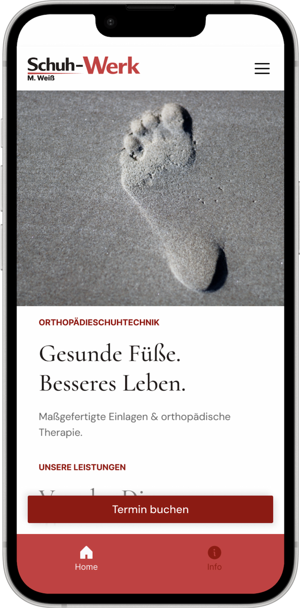
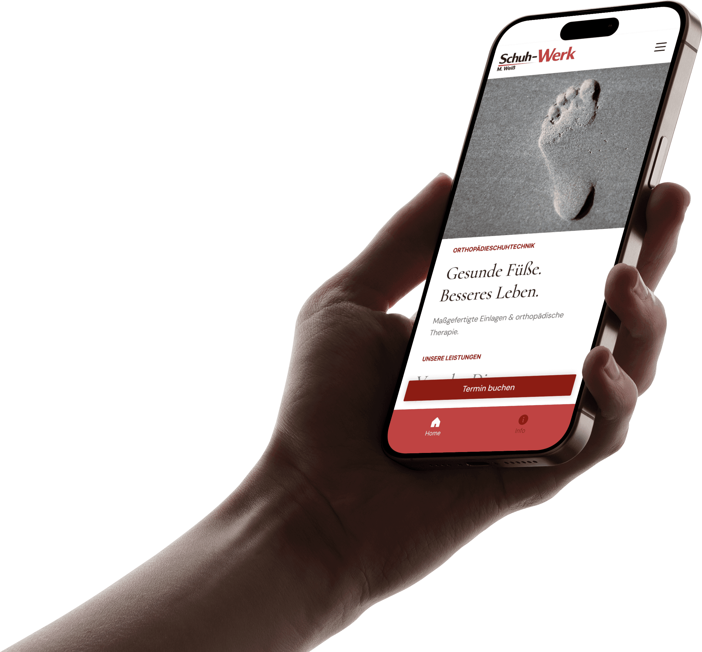
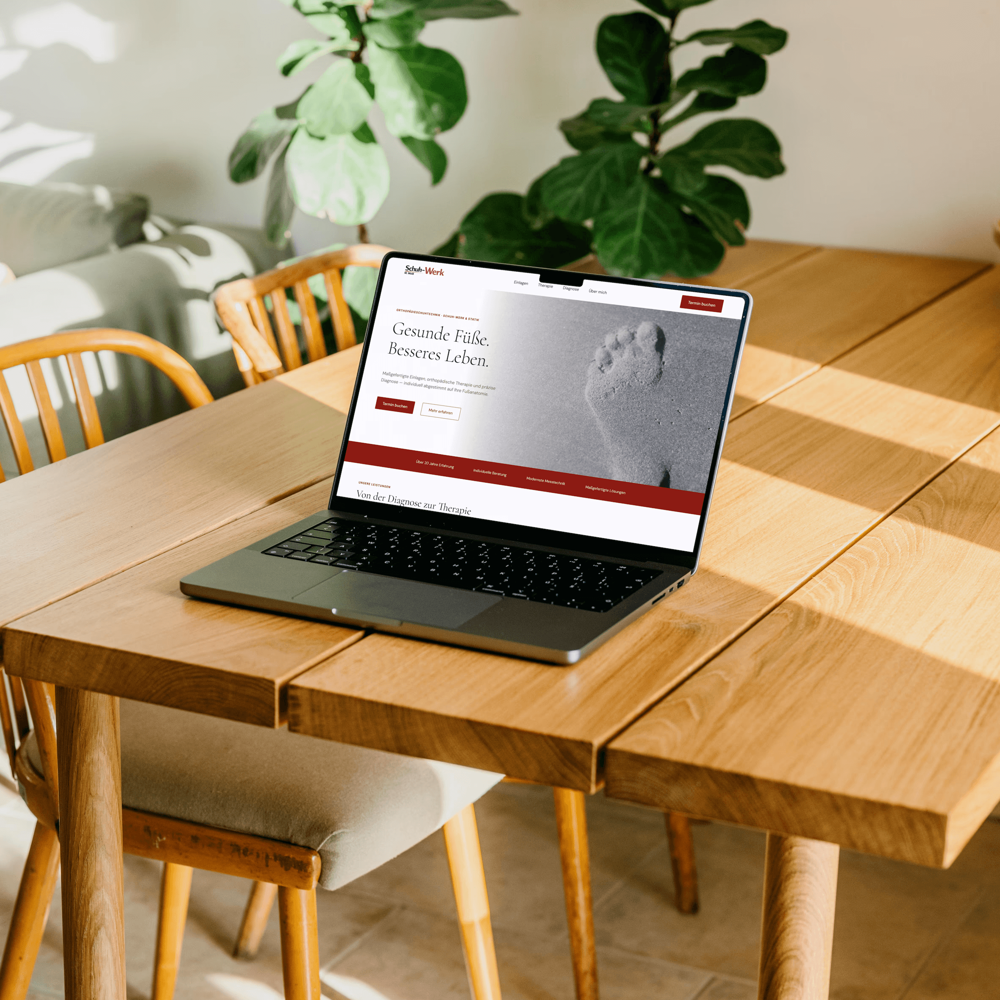
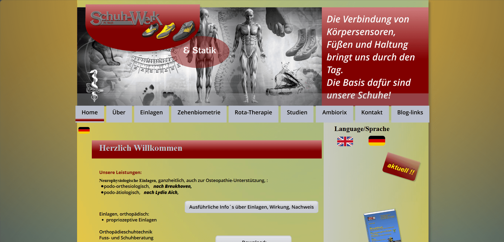

Schuh-Werk & Statik
Bringing a master craftsman online.
A UX redesign and companion-app concept for a Bavarian orthopedic shoemaker, turning a low-trust website into a credibility-driven experience with frictionless booking.



World-class craft offline. Near-zero presence online.
Michael Weiß is a master orthopedic shoemaker whose patients describe his treatment as life-changing. He combines biomechanics, posture analysis, and handmade insoles into a method no competitor offers. Yet his self-built website — which he was deeply proud of — was outdated, structurally confusing, and missing every trust signal modern users expect.
The result: new patients only found him through word-of-mouth, while competitors with weaker services dominated local search.

Turn reputation into appointments.
- Quickly find a trustworthy local orthopedic specialist.
- Understand what services are offered and what they cost.
- Book or contact the specialist without friction.
- Grow online visibility beyond word-of-mouth referrals.
- Convert website visitors into appointments.
The old site delivered on none of these expectations.
I interviewed Michael, surveyed 23 potential users, analysed 5 regional competitors, ran a SWOT analysis, and reviewed real Google testimonials — despite his actual practice being praised in every single review I read.
The strongest USP, the weakest voice.
Large medical-supply network with a strong digital presence and clinical partnerships. Scale and trust through brand authority.
Traditional shoemaking plus modern tech. Speaks both the “craft” and “innovation” languages users respond to.
Orthopedic technology and 3D analysis. Prioritises technology messaging, not personal consultation.
Schuh-Werk had the strongest USP of all — biomechanics + posture + handmade craft + personal consultation — but the weakest digital communication.
Users in need of orthopedic treatment can't find, understand, or trust Schuh-Werk online — causing the business to lose clients to larger, less specialized competitors with better digital presence.
The redesign goal wasn't to replace the old website. It was to uncover the potential already there — without losing what made the original feel like Michael's.
Desk-bound, in pain, low patience for jargon.
Lisa, 31
Chieming · Office worker, hybrid schedule
“A good website is extremely important — a medical issue needs to feel serious.”
- Foot pain and lower-back discomfort from a desk-bound day.
- Health-conscious; searches Google and Maps for specialists.
- Overwhelmed by unclear medical information online.
- Needs proof of quality and a simple way to book.
His pride in the old site was a signal, not resistance.
Michael built the original site himself and was proud of it. So the redesign wasn't a replacement — it was about uncovering what was already there. I kept the warmth and personal voice, and rebuilt the structure around clarity. Here is the raw shape of what research surfaced, before it was distilled into the new architecture.
- Mostly younger users; female users mainly affected.
- First instinct is to search online; prefer phone contact.
- Good reviews are a strong point of his work — and crucial to deciding.
- Must-have info: services, prices, location, opening hours, contact.
- Clear guidance of his service; the site must feel serious for a medical issue.
- Users are on phone and web; recommendation is his main acquisition tool.
- People will drive multiple hours for good treatment — but most want someone nearby.
- The owner wants personal interaction, by call or meeting, and has limited capacity.
- He likes a colourful website and header; should stay local.
- Bigger clinics offer professional service but no personalised treatment.
- Trust, transparency, specialisation and a holistic approach matter in health.
- Custom insoles — a unique method, left and right foot different; consultation possible.
- Customer comes and leaves with a finished product within an hour; repair service; blog + studies.
- Finding customised insoles is challenging; users arrive from diverse backgrounds, not only foot pain.
- The old site needed better structure to navigate.
- Challenge: keep the customer base and acquire new clients.
- Good treatment isn't always easy to find near home; people dislike waiting for answers.
“What he makes” vs. “how he treats.”
An open card sort revealed that users intuitively separate what he makes from how he treats — which the original site mixed together. The new IA reorganises around user intent: Craft · Treatment · About · Contact.
- Insoles
- Neurophysiological insoles
- Proprioceptive treatment
- Therapy
- Rota therapy
- Osteopathy support
- Toe biometrics
- Foot-pressure measurement & 3D scan
- M. Weiß — your foot specialist (biography)
- Contact — phone, form, map, hours
The website redesign — evolve, don't replace.
A clean, structured, trust-led version of Michael's website — built to evolve the original, not replace it. A clean-slate redesign would have lost the warmth and personality that already worked, so the redesign carried his colour, voice, and craftsmanship forward into a clearer structure.
Homepage
Leads with real customer testimonials, workshop imagery, and a clear service overview.
Treatment pages
Explain insoles and posture care in plain language, with transparent pricing.
About
Surfaces Michael's certifications, biography, and workshop visuals to build credibility.
Contact
Phone, form, map, opening hours, and a personal photo of Michael — reachable in two clicks from anywhere.
One path, five steps, no dead ends.
Choose language
English or German — decided at the front door, not buried in a menu.
Home
Real testimonials, workshop imagery and a clear service overview — trust built in the first scroll.
Choose what you're looking for
Insoles · Repair · Treatment · Diagnosis · About — organised by user intent, straight from the card sort.
Service detail
The treatment explained in plain language, with transparent pricing.
Solution found?
Contact form or in-person appointment — reachable in two clicks from anywhere.
Straight back to “Choose what you're looking for” — never a dead end.
The companion app — restraint over feature creep.
A mobile app for returning patients, focused entirely on one thing — booking the next appointment. Existing patients told us they re-book regularly and want a faster path than calling.
The first prototype had layered navigation with multiple sections. Usability testing showed users got lost — the depth worked against the exact thing the app was meant to make easy. So we stripped it back: the final version has just two buttons in the navigation bar, keeping the entire experience focused on the appointment.
The final companion app — home screen with the two-button navigation.
Restraint beats feature creep.
- Clear, research-backed IA validated by card sorting.
- 3 user-flow paths mapped to the 3 core user intents.
- A redesign concept that respects the owner's identity while solving real user problems.
- A focused, two-button companion app that proves restraint beats feature creep.
Designing with the owner, not over him.
- Letting research drive structure instead of imagining features first.
- Treating the owner's emotional attachment as a design input, not a blocker.
- Catching the over-complex app navigation early through usability testing.
- Multi-method research compounded into a clear direction.
- Start usability testing with paper prototypes, not mid-fidelity.
- Accessibility belongs at the start, not the end — especially for older users.
- Involve Michael directly in the card sorting to build buy-in earlier.
Michael's pride in his self-made site wasn't resistance to change — it was a signal about what mattered to him. Treating that attachment as a design input rather than an obstacle made the collaboration stronger and the final concept more authentic than any “from-scratch” redesign could have been.
Designing with the owner, not over him.The companion app, in motion.
Two buttons, one job — a full booking pass through the final prototype.
Prototype recording — booking an appointment through the two-button companion app. Plays silently.